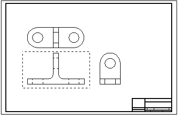
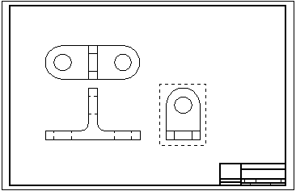
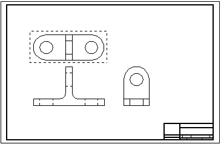
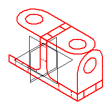

Creating model sketches from 2D drawing views
When you select the Create 3D command, the Create 3D dialog box guides you through the process of:
-
Selecting a 3D template file to create a new model, or selecting an existing model file to update.
-
Selecting the 2D view geometry and manufacturing dimensions for each sketch.
Selecting a 3D template file
When creating a new model document, you can select a template file from the File list, or you can use the Browse button to locate a template. Choose a template type that matches the type of model you are creating: part, sheet metal, or assembly.
Changing creation options
You can click the Options button to change these sketch creation options:
-
The default projection angle to use when arranging the sketches in the 3D model.
-
The dimension types to copy from the 2D drawing to the model. These dimensions are recreated as 3D PMI dimensions in the model.
Note:These dimensions are only included in synchronous models and not in ordered models. You can use the Solid Edge Options→Helpers page to control the modeling environment to use when a new document opens. If you open new documents in the synchronous environment, you can automatically include the dimension types to copy from the 2D drawing to the model. If you open new documents in the ordered environment, you can not include the dimensions. However, after creating the model, you can copy the dimensions from the drawing.
Selecting the 2D view geometry and dimensions
You select the geometry you want to include in the part sketch by dragging a fence around the drawing view. You also can select individual elements in a drawing view using Shift+click.
-
You can include lines, arcs, circles, curves, and polylines and line strings created with imported data in your selection set.
-
For part and sheet metal models, you can include drawing dimensions along with the geometry.
You can define additional sketch views from the same drawing using the Next button in the Create 3D dialog box.
Using the Next button, the geometry in each of these three drawing views is selected to create three sketches that define the part.



Selecting view types
The View Type options in the Create 3D dialog box specify the view type to create from the drawing view. The first drawing view you select defines the primary view. The Folded Principal View option in the Create 3D dialog box specifies this type of sketch.
-
Folded principal views are orthogonal or aligned with the primary view. You select this view type to define the primary view.
-
Folded auxiliary views are true auxiliary views that are generally derived from principal views and require a fold line to determine the edge or axis around which you want to fold the view.
-
Copy view(s) are not orthogonal, and they may not align with the primary view. These views are placed as sketches on the same plane as the last principal view defined in the draft file.
The Set Fold Line button defines a line or point in an orthogonal or auxiliary view on which to fold the view. You can select the Set Fold Line button after you select all of the elements for a view that is not the primary view.
Finishing the sketches
After you define all views, select the Finish button to open the model document with the sketches placed in it. You can use the commands in the 3D environment to extrude the geometry into 3D shapes, create cutouts from circles, and finish the model.
The following sketch was created by selecting the previous three drawing views.

The results of the Create 3D command vary depending upon the model type and whether it contains synchronous objects, ordered objects, or both.
Create 3D results for part and sheet metal files
-
When creating or updating a synchronous part or sheet metal model, or a model that contains both synchronous and ordered features, the 2D drawing views are placed as synchronous sketches with PMI dimensions in the model. The PMI dimensions control changes to the model and can be edited. The sketches and PMI are listed under the User-Defined Sets collection in PathFinder.
-
When creating an ordered-only part or sheet metal file, ordered sketches, along with coordinate systems, are added to PathFinder as normal sketches, but the 2D drawing dimensions are not copied to the model. After you create the part or sheet metal file, you can copy the drawing dimensions to the model.
Create 3D results with assembly models
-
When creating or updating an assembly model, ordered sketches are created in PathFinder. No dimensions are copied to the model.
Working with Create 3D user-defined sets
In a model with synchronous objects, the sketches and PMI dimensions converted by the Create 3D command are listed in PathFinder under the User-Defined Sets collection.
-
The dimensions associated with each 2D drawing view you converted are preserved in their own set, labeled Create 3D 1, Create 3D 2, Create 3D 3, and so on.
-
You can manipulate the sketch geometry and the PMI dimensions in each Create 3D set independently of the others.
-
-
If multiple drawing views were converted, the last Create 3D set in the list collects all of the sketches and PMI dimensions.
-
You can use this set to move all of the sketches and dimensions together, in 3D space, relative to the model origin.
-
Moving PMI dimensions created by Create 3D
In a model with synchronous objects, the 3D steering wheel is displayed for you to move the sketches along with the PMI dimensions created by the Create 3D command.
-
The default selection is for all of the sketches to move together. You can move individual sketches by selecting the matching Create 3D user defined sets in PathFinder.
-
When the PMI dimensions are positioned as you want them, you can use the Attach PMI command on the shortcut menu of the Create 3D user-defined sets to attach the dimensions to the sketch geometry.
How do I
Create a model sketch from 2D geometryLook up more details
Create 3D commandCreate 3D dialog box